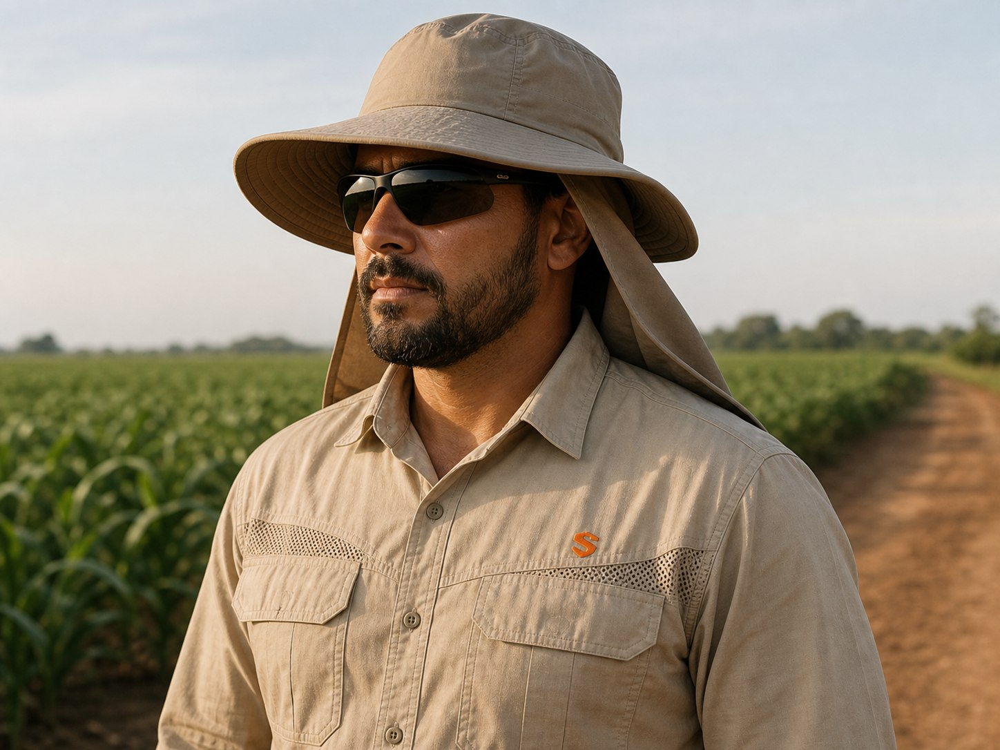
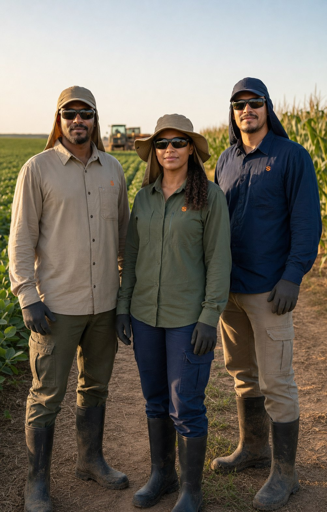
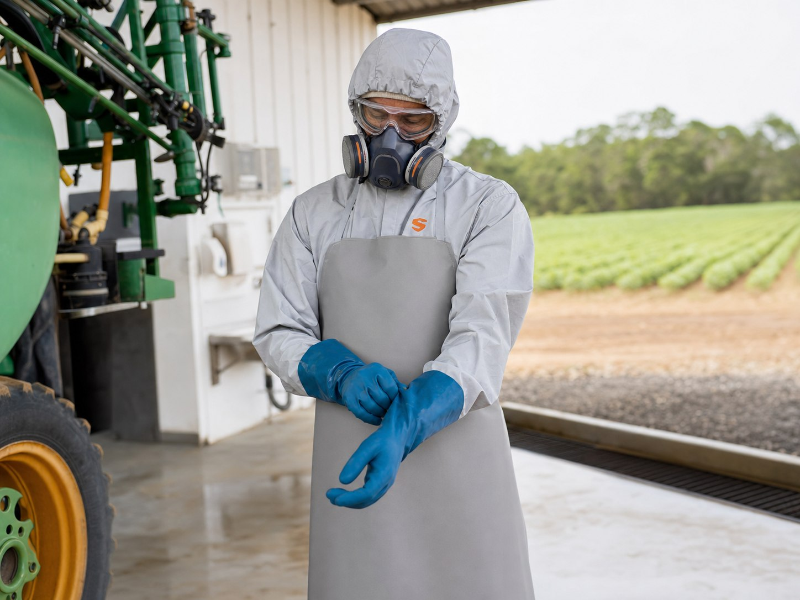
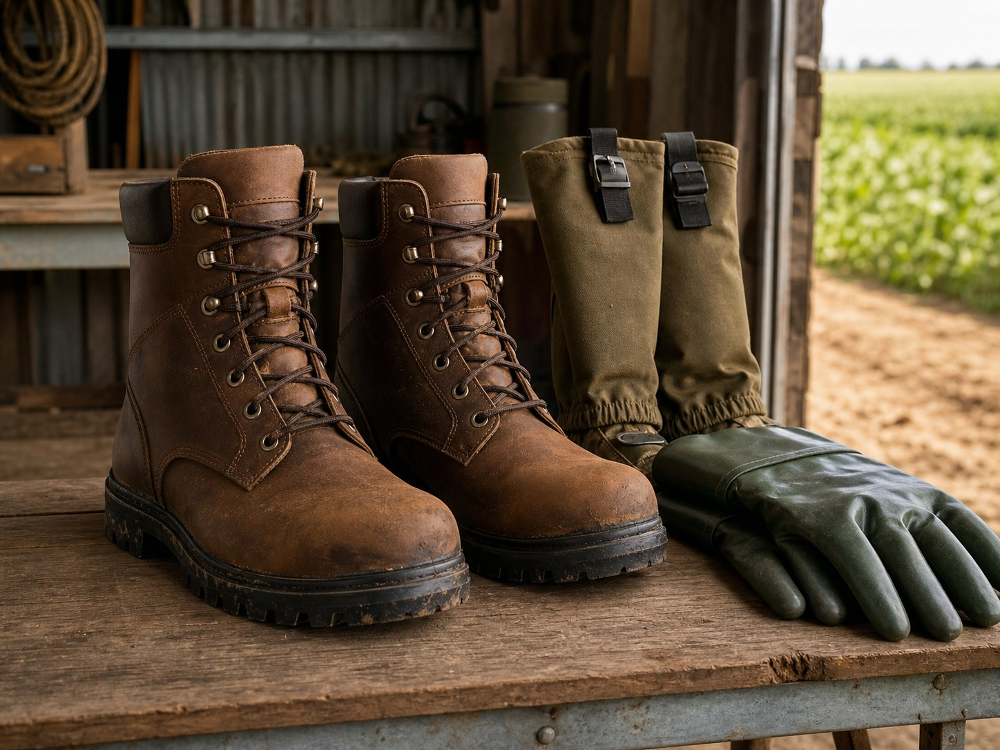

Rotina exposta
CONJUNTO DE CAMPO COM PROTEÇÃO UV
Camisa, calça ou conjunto leve para jornadas externas, com foco em conforto térmico e proteção solar.
Setor agronegócio
Uniformes para sol, defensivos, manejo e operação rural, definidos pela exposição e pela função de cada equipe.

01
Tipo de cultura, clima e exposição.
02
Proteção solar, tecido e modelagem.
03
Defensivos, botas, luvas e respiradores.
04
Entrega por turma, fazenda ou função.
O que compõe
No campo, a composição muda conforme exposição solar, produto químico, terreno, água, lama e jornada.

Rotina exposta
Camisa, calça ou conjunto leve para jornadas externas, com foco em conforto térmico e proteção solar.

Agroquímicos
Peças de proteção para manuseio e aplicação, combinadas com luvas, botas, respirador e óculos conforme a operação.

Terreno e apoio
O kit de apoio completa a roupa quando há lama, umidade, atrito, respingo, poeira ou contato com ferramentas.
Rotinas atendidas
A mesma fazenda pode exigir soluções diferentes para lavoura, defensivos, manejo, colheita e manutenção.
Sol e jornada
Camisas UV, calças leves e peças respiráveis para exposição prolongada.
NR31
Barreira adequada para aplicação e manuseio, com EPIs complementares.
Campo
Peças resistentes para pecuária, irrigação, ronda, manutenção e apoio.
Safra
Reposição organizada para equipes temporárias, turnos e áreas distantes.
Critério técnico
A Supply combina tecido, proteção, EPIs e entrega conforme exposição real da equipe no campo.
UV
Tecidos e modelagens definidos para exposição prolongada, calor e mobilidade.
NR31
Composição pensada para segurança no campo, aplicação e manuseio de produtos.
EPI
Botas, luvas, óculos e respiradores entram conforme risco químico, mecânico ou ambiental.
KIT
Separação por função, fazenda, safra, turno ou colaborador para facilitar controle.
Atendimento consultivo
Informe cultura, quantidade de colaboradores, exposição solar, uso de defensivos e EPIs necessários para cada função.